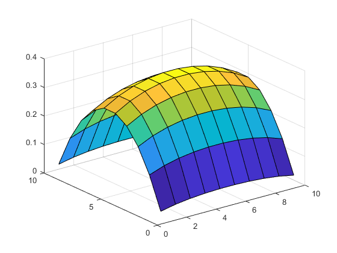
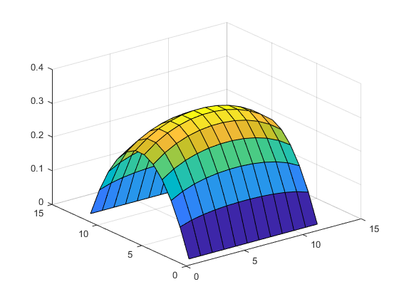

Contents
clc,clear;
各种算法及其运行时间
n = 10;
A = diag(4*ones(1,n))+diag(-ones(1,n-1),-1)+diag(-ones(1,n-1),1);
I = -eye(n);
AA = zeros(n*n);
for i = 1:n
AA(n*i-n+1:n*i,n*i-n+1:n*i) = A;
end
for i =1:n-1
AA(n*i-n+1:n*i,n*(i+1)-n+1:n*(i+1)) = I;
AA(n*(i+1)-n+1:n*(i+1),n*i-n+1:n*i) = I;
end
h = 1/(n-1);
f = (3-2)*h^2*ones(n*n,1);
x = linspace(0,1,n);
v = meshgrid(x.*(1-x))';
时间测试开始
LU分解法的求解时间，及结果绘图
tic
U = LUsolve(AA,f);
toc
u = reshape(U,n,n)+v;
surf(u);
时间已过 0.001208 秒。

高斯消元法的求解时间及结果绘图
tic
U = GaussElim(AA,f);
toc
u = reshape(U,n,n)+v;
surf(u);
时间已过 0.001349 秒。

Cholesky分解求解时间及结果绘图
tic
U = ChlskSolve(AA,f);
toc
u = reshape(U,n,n)+v;
surf(u);
时间已过 0.010917 秒。
Jacobi迭代格式的求解时间及结果绘图
u = Jacobi(10);
surf(u);
时间已过 0.002622 秒。
迭代结束,i=403,e_max=0.000000000977
Gauss-Seidel 迭代格式的求解时间及结果绘图
u = GSiter(10);
surf(u);
时间已过 0.000755 秒。
迭代结束,k=211,e_max=0.000000000981

超松弛迭代的Gauss-Seidel法的求解时间及结果绘图
u = GSiterSOR(10,1.5);
surf(u);
时间已过 0.000159 秒。
迭代结束,k=63,e_max=0.000000000730

块Gauss-Seidel 迭代格式的迭代时间及结果绘图
u = GSBlockIter(10);
surf(u);
时间已过 0.006438 秒。
迭代结束,k=108,e_max=0.000000095070

块超松弛迭代解法 的迭代时间及其结果绘图
u = GSBSORiter(10,1.5);
surf(u)
时间已过 0.002844 秒。
迭代结束,k=31,e_max=0.000000048799

共轭斜量法 的运行时间及其结果绘图
tic
U = GCsolve(AA,f);
toc
u = reshape(U,n,n)+v;
surf(u);
时间已过 0.001384 秒。
预条件的共轭斜量法
tic
U = PGCsolve(AA,f);
toc
u = reshape(U,n,n)+v;
surf(u);
时间已过 0.027213 秒。